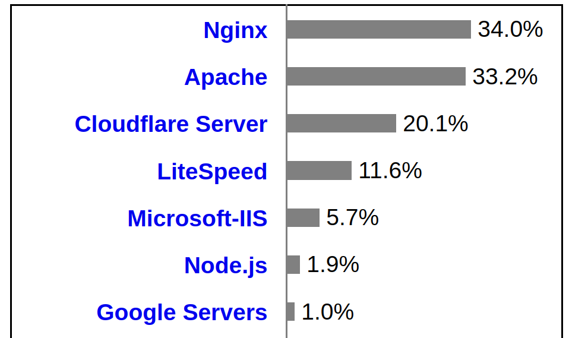

<!doctype html>
<html class="theme-5">
<meta charset="utf-8" />
<link href="../html-slideshow.bundle.min.css" rel="stylesheet" />
<link href="../style.css" rel="stylesheet" />
<script src="https://dbwebb.se/cdn/js/html-slideshow_v1.1.0.bundle.min.js"></script>

<title>Web servers</title>

<script data-role="slide" type="text/html" data-markdown class="titlepage center">
# Web servers
## An orientation
### Mikael Roos
</script>


<script data-role="slide" type="text/html" data-markdown>
# Agenda

* Web server features
* Popular web servers
* Web services
* Application servers

</script>


<script data-role="slide" type="text/html" data-markdown class="titlepage center">
# Web server
## Main features
</script>


<script data-role="slide" data-markdown type="text/html">
# Basics

* A server that understands the HTTP protocol
* Listen on requests port 80 (http) and 443 (https)
    * (or some other port)
* Manages resources reachable through an URL

</script>


<script data-role="slide" data-markdown type="text/html">
# HTTP protocol

* Textbased request and response protocol
* Contains header and body
* Request methods
    * GET a resource from the server
    * POST data to the server
    * (PUT, PATCH, DELETE)
* Response status code (200, 404)

</script>


<script data-role="slide" data-markdown type="text/html">
# Static resources

* Web pages as HTML, CSS, JavaScript
* Other resources (documents, files, media)
* Incoming URL through HTTP request, 
    * match URL to document
    * and serve it

</script>


<script data-role="slide" type="text/html" data-markdown>
# Dynamic resources

* Server-side language, included in web server
* PHP, ASP, JSP
* CGI common gateway interface
* Connect to other/database sources
* Render content dynamically

</script>


<script data-role="slide" type="text/html" data-markdown>
# Example PHP

* Render dynamic content as a web page in `page.php`

```
<?php
$db = new PDO($dsn);
$res = $db->execute("SELECT * FROM users");
?>

<h1>List of users</h1>
<ul>

<?php foreach ($res) : ?>
    <li>User: <?= $res['acronym'] ?>, <?= $res['name'] ?></li>
<?php endforeach; ?>

</ul>
```

</script>


<script data-role="slide" type="text/html" data-markdown>
# Web server summary

* Talks HTTP
* Resources reachable through URL
* Serves statical and dynamic content

</script>


<script data-role="slide" type="text/html" data-markdown class="titlepage center">
# Different web servers
</script>


<script data-role="slide" data-markdown type="text/html">
# (LMWX)AMP

* A development stack with Apache, MariaDB and PHP
* LAMP or XAMPP for Linux
* WAMP or XAMPP for Windows
* MAMP or XAMPP for Mac

</script>


<script data-role="slide" data-markdown type="text/html">
# MERN, MEAN, MEVN

* Web application stacks for Node
* [M] MongoDB
* [E] Express
    * [A] Angular
    * [R] React
    * [V] Vue
* [N] Node

</script>


<script data-role="slide" type="text/html" data-markdown>
# Built in

* Some languages have built in web servers for development
* `php -S localhost:8000`
* `python -m http. server 8000`

* Others are easily executable
* `npx http-server -p 9001`

</script>


<script data-role="slide" type="text/html" data-markdown>
# Popular alternatives

* For production sites
* Apache
    * Threaded webserver, thread pool
* Nginx
    * Async IO, event loop
* IIS (Internet Information Services) or Windows Web Server

</script>


<script data-role="slide" data-markdown type="text/html" class="center">
# Popularity
<figure>
    
    <figcaption>Popularity of webservers (2022).</figcaption>
</figure>
</script>


<script data-role="slide" type="text/html" data-markdown>
# Web services

* Web server hosting a RESTFul API
    * Representational state transfer
* Request methods
    * GET, POST, PUT, PATCH, DELETE
* A representation of a state/resource
    * JSON
    * XML
* Useful for SPA clients. mobile apps and server to server communication

</script>


<script data-role="slide" type="text/html" data-markdown>
# Application server

* Do more than just being a web server
* Integrate with a server-side programming language
    * Node.js (Express) (JavaScript)
    * Apache Tomcat (Java application server)
    * Django (Python web framework)
    * .NET (C#, development environment Windows)

</script>


<script data-role="slide" type="text/html" data-markdown>
# Node application server

* A node application can act as a web server
    * (if you code it to be such)
* A node application is also an application, or application server
    * (do more than being a web server)
* Alternative for server-side scripting with PHP, ASP, JSP

</script>


<script data-role="slide" type="text/html" data-markdown>
# Build node server

```
import http from 'http'

const app = http.createServer((req, res) => {
    const aUrl = req.url
    const aMethod = req.method
    console.log(`Got request on url '${aUrl}' using method '${aMethod}'`)
    res.writeHead(200, { 'Content-Type': 'text/plain' })
    res.end(`Hello World! (${aUrl})\n`)
})

app.listen(3000, '127.0.0.1')
```

</script>


<script data-role="slide" type="text/html" data-markdown>
# Build node server...

```
$ curl localhost:3000
Hello World! (/)
```

```
$ node index.mjs 
Node server running on port 3000
Got request on url '/' using method 'GET'
```

</script>


<script data-role="slide" type="text/html" data-markdown>
# Summary

* Web server features
* Popular web servers
* Web services
* Application servers

</script>


<script data-role="slide" type="text/html" data-markdown class="titlepage center">
# The end
</script>


<script data-role="slide" type="text/html" data-markdown>
</script>

</html>
